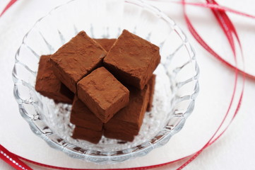

口の中でとろける！絶品生チョコ  材料 チョコレート(製菓用)： 200g 生クリーム： 100ml ココアパウダー： 適量 作り方 チョコレートをできるだけ細かく刻む。 鍋で生クリームを温め、沸騰する少し前に火を止める。(まわりがぷくぷくっとしてきたくらい) 刻んだチョコレートを入れて溶かす。 ラップを敷いたバットに流し込み、冷蔵庫で一晩冷やします。 好きな大きさにカットし、ココアパウダーをまぶして完成！